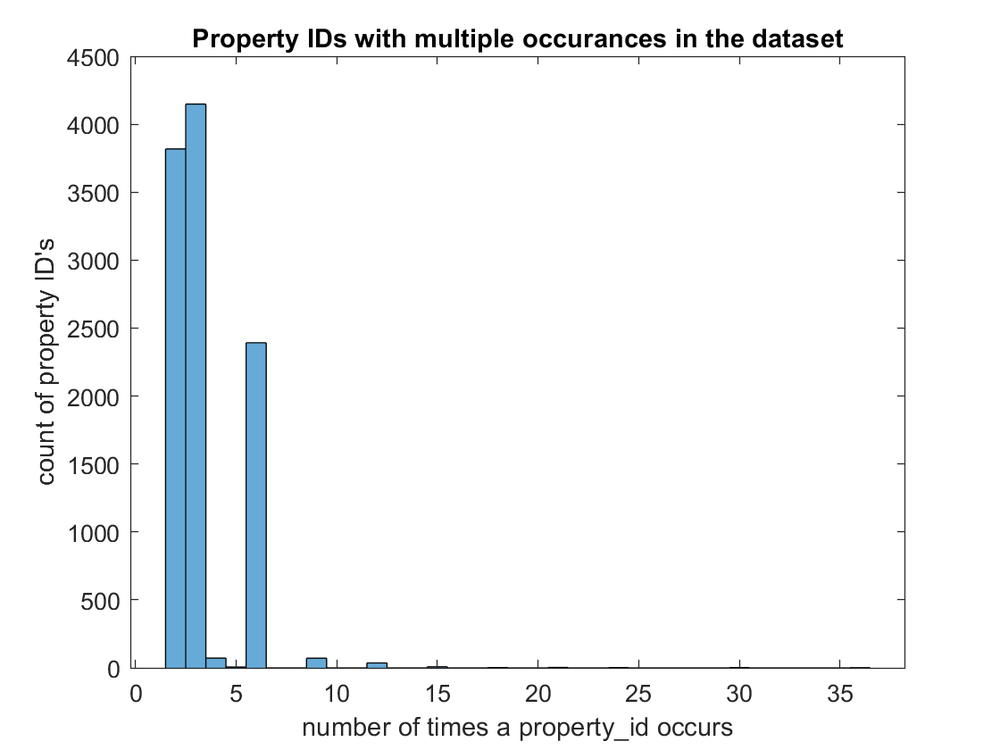
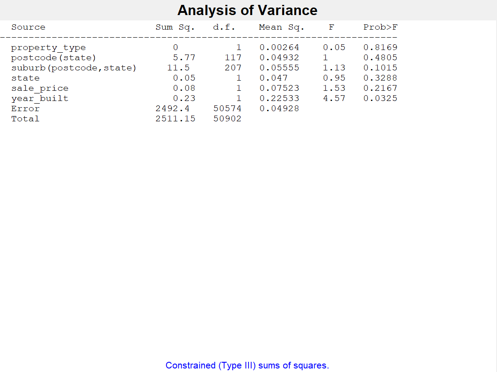
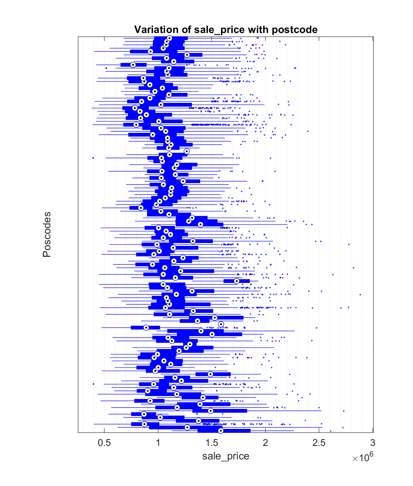
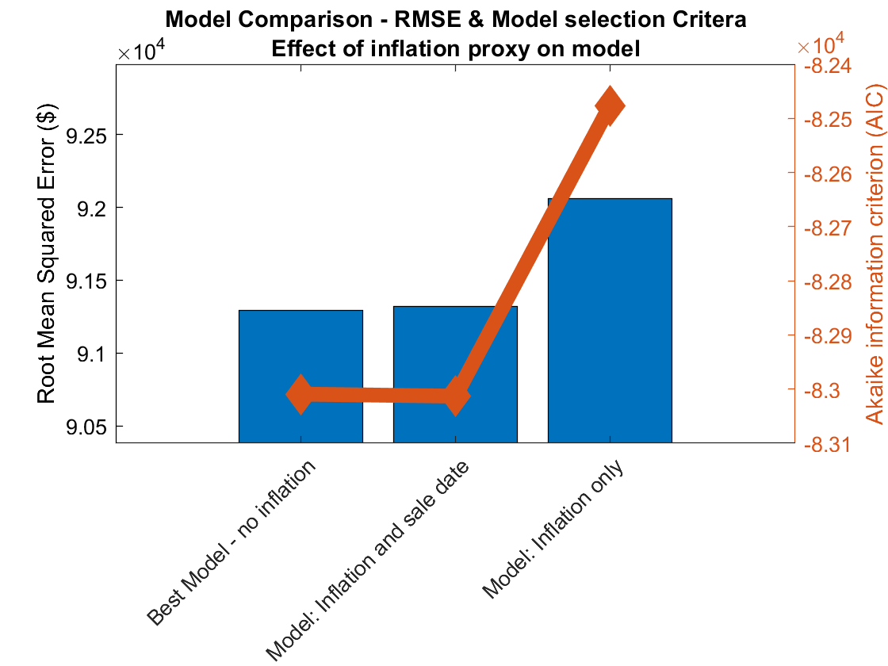

Modelling Property Prices with Mixture models
Property Pricing Analysis
A common application of gaussian mixture models is in property pricing. It’s used as an implementation of a “Hedonic Pricing” which involves modelling the price using variables categorised into 3 types; structural (intrinsic properties of the property), locality (region, state etc.) and environmental (air quality, proximity to parks etc.) the latter 2 types genrally have noise in their measurement - so are modelled as ‘random effects’. it’s this that makes a mixture model needed, where conventional multiple regression would only have errors as randomly distributed, and predictors fixed
Table of Contents
- Data Cleaning
- Missing Values
- Missing values
- Checking for random occurance of missing values
- Imputing missing values
- Exploring the Shape of data
- Summary
- Modelling House Prices
- Model 1: conservative missing value treatment.
- Model 2: Imputed missing values
- Model Selection
- Best Model: Mixed Effects model;
- Model Evaluation with 5% Inflation
% import the data as a table
RawData = readtable('C:\Users\Sam Schumacher\Documents\Job Applications 2020\Applications\REA Group\Property pricing\dataset.csv');
% preview the first 10 rows.
RawData(1:10,:)
| property_id | sale_price | sale_date | property_type | suburb | postcode | state | land | floorplate | bedrooms | bathrooms | garages | slope | max_roof_height | year_built | |
|---|---|---|---|---|---|---|---|---|---|---|---|---|---|---|---|
| 1 | 1452430 | 1061100 | 2011-06-02 | ‘House’ | ‘MOUNT ANNAN’ | 2567 | ‘NSW’ | 450 | 267 | 3 | 4 | 2 | -5.0325 | 7.1777 | 2000 |
| 2 | 6915958 | 543900 | 2013-01-16 | ‘Strata’ | ‘HILLCREST’ | 4118 | ‘QLD’ | 279 | 205 | 1 | 2 | 1 | -1.0426 | 5.8700 | 1982 |
| 3 | 841815 | 1102500 | 2014-07-20 | ‘House’ | ‘EMERTON’ | 2770 | ‘NSW’ | 552 | 104 | 1 | 3 | 2 | -9.1149 | 4.1400 | 1988 |
| 4 | 4393085 | 1183800 | 2019-08-15 | ‘Strata’ | ‘PACIFIC PINES’ | 4211 | ‘QLD’ | 380 | NaN | 2 | 4 | 2 | -2.7863 | 6.8900 | 1988 |
| 5 | 2782313 | 805200 | 2013-10-30 | ‘Strata’ | ‘MARSFIELD’ | 2122 | ‘NSW’ | 3627 | 1239 | 2 | 2 | 2 | -1.1416 | 12.2070 | 2000 |
| 6 | 5987368 | 1564100 | 2018-07-25 | ‘House’ | ‘MORAYFIELD’ | 4506 | ‘QLD’ | 997 | 288 | 2 | 3 | 1 | -4.3728 | 4.4600 | 1990 |
| 7 | 4000575 | 816300 | 2015-08-27 | ‘Strata’ | ‘PLUMPTON’ | 2761 | ‘NSW’ | 131 | 97 | 2 | 3 | 0 | -2.9442 | 7.7500 | 1984 |
| 8 | 4866318 | 1003100 | 2015-03-10 | ‘House’ | ‘LOGAN CENTRAL’ | 4114 | ‘QLD’ | 607 | 128 | 1 | 3 | 1 | 14.3246 | 5.4667 | 1970 |
| 9 | 6546840 | 563400 | 2010-10-04 | ‘Strata’ | ‘QUAKERS HILL’ | 2763 | ‘NSW’ | 378 | 1559 | 1 | 2 | 1 | 10.5286 | 24.7724 | 1985 |
| 10 | 7120683 | 962200 | 2017-09-30 | ‘Strata’ | ‘COOMBABAH’ | 4216 | ‘QLD’ | 1665 | 1031 | 2 | 3 | 2 | -7.3192 | 13.6833 | 1988 |
We’ve got a combination of strings, integers and floating point numbers.
Lets see the range of them, and their data types;
summary(RawData)
Variables:
property_id: 52248x1 double
Values:
Min 1.9224e+05
Median 4.6982e+06
Max 1.7425e+07
sale_price: 52248x1 double
Values:
Min 3.781e+05
Median 9.775e+05
Max 2.8832e+06
sale_date: 52248x1 datetime
Values:
Min 2010-01-01
Median 2015-02-23
Max 2020-12-31
property_type: 52248x1 cell array of character vectors
suburb: 52248x1 cell array of character vectors
postcode: 52248x1 double
Values:
Min 2074
Median 3395.5
Max 4510
state: 52248x1 cell array of character vectors
land: 52248x1 double
Values:
Min 51
Median 550
Max 2.304e+05
NumMissing 41
floorplate: 52248x1 double
Values:
Min 38
Median 212
Max 5843
NumMissing 121
bedrooms: 52248x1 double
Values:
Min 1
Median 2
Max 7
NumMissing 299
bathrooms: 52248x1 double
Values:
Min 1
Median 3
Max 7
NumMissing 243
garages: 52248x1 double
Values:
Min 0
Median 1
Max 8
NumMissing 494
slope: 52248x1 double
Values:
Min -42.052
Median 0.067975
Max 43.77
NumMissing 773
max_roof_height: 52248x1 double
Values:
Min 2.1407
Median 6.3969
Max 51.598
NumMissing 797
year_built: 52248x1 double
Values:
Min 1860
Median 1989
Max 2012
NumMissing 1345
Loading the data into the workspace automatically decided what type of varaible in each column of the CSV.
Variables like property_id has been classified the same way as slope (as double), though they’re a different type of variable: an ID will usually be an integer, slope is definitely a floating point number.
By displaying the unique values returned when dividing all 52,248 rows by 1, we can double check which of the variables are strictly integers;
% identify if 1st value in each column is numeric
numericIdx = arrayfun(@(X) isnumeric(RawData{1,X}) , 1:width(RawData) );
for ix = find(numericIdx)
% unique list of values created by dividing all observations by 1
remainderVals = unique( rem(RawData{:,ix} , 1) );
% number of these values that are not NaNs (missing in the raw data)
countRealRemainders = numel( remainderVals ) - sum(isnan(remainderVals));
% display a count of unique decimals reamining after dividing each observation by 1
fprintf('%s has %.0f unique remainders after division by zero \n', RawData.Properties.VariableNames{ix}, countRealRemainders )
end
property_id has 1 unique remainders after division by zero
sale_price has 1 unique remainders after division by zero
postcode has 1 unique remainders after division by zero
land has 1 unique remainders after division by zero
floorplate has 1 unique remainders after division by zero
bedrooms has 1 unique remainders after division by zero
bathrooms has 1 unique remainders after division by zero
garages has 1 unique remainders after division by zero
slope has 26316 unique remainders after division by zero
max_roof_height has 12193 unique remainders after division by zero
year_built has 1 unique remainders after division by zero
So, only slope and max_roof_height can be considered true continuous variables. The rest have a remaineder of 0 when divided by 1, for all observations.
continuousIdx = ismember( RawData.Properties.VariableNames , {'slope','max_roof_height'});
% the other double type variables are discrete because they are all integers
discreteIdx = numericIdx & ~continuousIdx;
disp( RawData.Properties.VariableNames(discreteIdx))
'property_id' 'sale_price' 'postcode' 'land' 'floorplate' 'bedrooms' 'bathrooms' 'garages' 'year_built'
While these variables are all discrete, the magnitude of some of them is still meaningful. i.e. year_built’s value could indicate temporal patterns in the data, land, floorplate, bedrooms, bathrroms, garages will likely have a impact on sale_price.
If property_id is an identifier there should be the same number of unique identifiers as rows;
numel( unique(RawData.property_id))
ans = 26625
That’s not the case. Is there only a small number of reccurences of any one ID ?
t = tabulate(RawData.property_id);
figure;
histogram( t( t(:,2)>1 ,2) );
xlabel('number of times a property_id occurs','Interpreter','none')
ylabel('count of property ID''s')
title('Property IDs with multiple occurances in the dataset')

This could indicate some proeprties were bought and sold multiple times in the dataset. One property_id occcured 36 times.
% Show data with the property_id that occurs 36 times
RawData( RawData.property_id==t(t(:,2)==36,1) , : )
| property_id | sale_price | sale_date | property_type | suburb | postcode | state | land | floorplate | bedrooms | bathrooms | garages | slope | max_roof_height | year_built | |
|---|---|---|---|---|---|---|---|---|---|---|---|---|---|---|---|
| 1 | 5543930 | 747200 | 2016-02-09 | ‘Strata’ | ‘NERANG’ | 4211 | ‘QLD’ | 2200 | 43 | 1 | 3 | 1 | -11.0887 | 6.8100 | 1986 |
| 2 | 5543930 | 690500 | 2014-07-31 | ‘Strata’ | ‘NERANG’ | 4211 | ‘QLD’ | 2200 | 43 | 1 | 3 | 1 | -11.0887 | 6.8100 | 1986 |
| 3 | 5543930 | 836800 | 2018-08-17 | ‘Strata’ | ‘NERANG’ | 4211 | ‘QLD’ | 2200 | 43 | 1 | 3 | 1 | -11.0887 | 6.8100 | 1986 |
| 4 | 5543930 | 891800 | 2019-10-30 | ‘Strata’ | ‘NERANG’ | 4211 | ‘QLD’ | 2200 | 43 | 1 | 3 | 1 | -11.0887 | NaN | 1986 |
| 5 | 5543930 | 575500 | 2010-10-25 | ‘Strata’ | ‘NERANG’ | 4211 | ‘QLD’ | 2200 | 43 | 1 | 3 | 1 | -11.0887 | 6.8100 | 1986 |
| 6 | 5543930 | 830400 | 2018-06-15 | ‘Strata’ | ‘NERANG’ | 4211 | ‘QLD’ | 2200 | 43 | 1 | 3 | 1 | -11.0887 | 6.8100 | 1986 |
| 7 | 5543930 | 802100 | 2017-09-29 | ‘Strata’ | ‘NERANG’ | 4211 | ‘QLD’ | 2200 | 43 | 1 | 3 | 1 | -11.0887 | 6.8100 | 1986 |
| 8 | 5543930 | 830400 | 2018-06-15 | ‘Strata’ | ‘NERANG’ | 4211 | ‘QLD’ | 2200 | 43 | 1 | 3 | 1 | -11.0887 | 6.8100 | 1986 |
| 9 | 5543930 | 891800 | 2019-10-30 | ‘Strata’ | ‘NERANG’ | 4211 | ‘QLD’ | 2200 | 43 | 1 | 3 | 1 | -11.0887 | NaN | 1986 |
| 10 | 5543930 | 796900 | 2017-07-18 | ‘Strata’ | ‘NERANG’ | 4211 | ‘QLD’ | 2200 | 43 | 1 | 3 | 1 | -11.0887 | 6.8100 | 1986 |
This explains it; property_id 5543930 was a ‘Strata’ property_type. So, not all property_id’s define a unique property. This could give us insight into the data;
Insight #1: “Apartments with equivalent features (
bathrooms,garagesetc.) sell for different prices with onlysale_datechanging. Oncesale_dateis controlled for, the remaining variance could give a benchmark for the external effects onsale_pricethat we do not have data for.”
Only postcode & property_id will be converted from numeric to categoricals for the purpose of exploring the data. Though, we must take note of this conversion for postcode. Because this is a spatial category, it could later be converted back to a numeric distance feature.
% identify cells of strings, property_id, and postcode as categorical variables
categoryIdx = ismember( RawData.Properties.VariableNames , {'property_id','postcode'}) ...
| arrayfun(@(X) iscell(RawData{1,X}) , 1:width(RawData) );
disp( RawData.Properties.VariableNames(categoryIdx) )
'property_id' 'property_type' 'suburb' 'postcode' 'state'
Now we can reconstruct the dataset with meaningful data types before exploring the data.
Data = table();
% create categoricals
for ic = find(categoryIdx)
Data.(RawData.Properties.VariableNames{ic}) = categorical(RawData{:,ic});
end
% create numeric variables
for inum = find(numericIdx & ~categoryIdx)
Data.(RawData.Properties.VariableNames{inum}) = (RawData{:,inum});
end
Data.('sale_date') = RawData.sale_date;
disp(Data(1:5,:))
property_id property_type suburb postcode state sale_price land floorplate bedrooms bathrooms garages slope max_roof_height year_built sale_date
___________ _____________ _____________ ________ _____ __________ ____ __________ ________ _________ _______ _______ _______________ __________ __________
1452430 House MOUNT ANNAN 2567 NSW 1.0611e+06 450 267 3 4 2 -5.0325 7.1777 2000 2011-06-02
6915958 Strata HILLCREST 4118 QLD 5.439e+05 279 205 1 2 1 -1.0426 5.87 1982 2013-01-16
841815 House EMERTON 2770 NSW 1.1025e+06 552 104 1 3 2 -9.1149 4.14 1988 2014-07-20
4393085 Strata PACIFIC PINES 4211 QLD 1.1838e+06 380 NaN 2 4 2 -2.7863 6.89 1988 2019-08-15
2782313 Strata MARSFIELD 2122 NSW 8.052e+05 3627 1239 2 2 2 -1.1416 12.207 2000 2013-10-30
First 5 columns are categoricals, last column is the matlab ‘datetime’ class. Columns 6:14 are numeric integers and floating point numbers. sale_date will be more meaningful as a continuous, numeric variable that starts at 0 for the earliest date:
Data.sale_date_numeric = datenum(Data.sale_date) - min(datenum(Data.sale_date));
% store column names as variable names
varNames = Data.Properties.VariableNames;
Now is a good time to consider the the context & provenence of each of the variables, before diving deeper into the EDA and missing the big picture.
Listing common sense assumptions & relationships between variables:
property_id: multiple houses & multiple sale dates per IDsale_price: have to asusme unadjusted for inflationsale_date: should it be afteryear_built?
sum( year(Data.sale_date)<Data.year_built )
ans = 3
3 observations are not!
disp( Data(year(Data.sale_date)<Data.year_built,:) )
property_id property_type suburb postcode state sale_price land floorplate bedrooms bathrooms garages slope max_roof_height year_built sale_date sale_date_numeric
___________ _____________ ___________ ________ _____ __________ ____ __________ ________ _________ _______ ________ _______________ __________ __________ _________________
1887328 House ST MARYS 2760 NSW 1.0236e+06 582 149 1 4 1 16.166 3.73 2012 2011-09-26 633
5105997 House WOODY POINT 4019 QLD 9.642e+05 607 116 2 5 2 -0.64221 5.0763 2012 2010-09-17 259
1095750 House HORNSBY 2077 NSW 9.493e+05 658 181 1 3 0 -1.1965 5.7719 2012 2010-11-19 322
Same year_built but different locations and sale_dates is suspect. With no way to verify if this is measurement error, and only small deviations in time, all we can do is treat these observations with less weight, if modelling technique allows.
lowDataQuality_id = year(Data.sale_date)<Data.year_built;
property_type: Should expect more strata with later year_built dates, lower number of rooms/garages, lower prices but on larger land & floorplate. Smaller floorplate to land ratio than Houses.suburb, postcode, state: these are nested categories in that order.land, floorplate: larger land than floorplate
sum( (Data.land)<Data.floorplate )
ans = 5781
Wrong assumption! This finding is contradictory to the description of the land and floorplate variables. Contacting the subject matter expert is required here, as there are a considerable number of violations of this common sense assumption. Until then, becasue these are all “Strata” property_types we’ll assume the meaning is; “accumulated floorspace of all properties under that same property_id, in square meters”, and treat these observations as no different.
bedrooms, bathrooms, garages: No specific assumptions to point out.slope: expect normally distributed values: the land’s gradient & orientation of houses shouldn’t have a bias.max_roof_height: larger values for Strata (multi-level)year_built: (assale_dateabove)
Data Cleaning
Data cleaning will be done before exploring the data relationships, to give a clearer picture. This involves missing value handling, outlier treatments and some variable transformations.
Missing Values
Checking string categoricals for empty strings or missing observations;
sum( Data{:,1:5}=="" | Data{:,1:5}==" " | ismissing(Data{:,1:5}) )
ans = 1x5
0 0 0 0 0
No categoricals have empty category labels.
Inspecting only the numeric varialbes for missing values;
summary(Data(:,[6:15]))
Variables:
sale_price: 52248x1 double
Values:
Min 3.781e+05
Median 9.775e+05
Max 2.8832e+06
land: 52248x1 double
Values:
Min 51
Median 550
Max 2.304e+05
NumMissing 41
floorplate: 52248x1 double
Values:
Min 38
Median 212
Max 5843
NumMissing 121
bedrooms: 52248x1 double
Values:
Min 1
Median 2
Max 7
NumMissing 299
bathrooms: 52248x1 double
Values:
Min 1
Median 3
Max 7
NumMissing 243
garages: 52248x1 double
Values:
Min 0
Median 1
Max 8
NumMissing 494
slope: 52248x1 double
Values:
Min -42.052
Median 0.067975
Max 43.77
NumMissing 773
max_roof_height: 52248x1 double
Values:
Min 2.1407
Median 6.3969
Max 51.598
NumMissing 797
year_built: 52248x1 double
Values:
Min 1860
Median 1989
Max 2012
NumMissing 1345
sale_date: 52248x1 datetime
Values:
Min 2010-01-01
Median 2015-02-23
Max 2020-12-31
All but sale_price and sale_date have missing values. The most missing values is in year_built, which has 1345 missing (2-3% of observations).
Missing values
One option for treating the missing variables when they are few is to remove the row entirely. Though, if this method is used, we need to be sure there isn’t a pattern to where the missing variables occur. If the missing values occur in a non-random way - removing them might be removing a hidden variable in itself.
Checking for random occurance of missing values
missingRow = any(ismissing(Data{:,7:14}),2);
sprintf( '%0.1f%% of rows have at least 1 missing variable', sum( missingRow ) ./ height(Data)*100 )
ans = '7.6% of rows have at least 1 missing variable'
Looking at correlations, and their associated pvalues between numeric variables and incidence of rows where at least one variable has a missing value will show if there is a significant underlying pattern to the missing values. But first, a transform of sale_date to numeric from datetime class.
[rho,p] = corr([Data{:,[6:14,16]}, missingRow ],'rows','pairwise');
missingTbl = table( p(end,1:end-1)' , rho(end,1:end-1)' , 'VariableNames',{'pValue','correlation'} , ...
'RowNames',varNames([6:14,16])');
disp( missingTbl )
pValue correlation
________ ___________
sale_price 0.030832 -0.0094464
land 0.51082 -0.0028779
floorplate 0.20624 -0.0055362
bedrooms 0.64712 -0.0020085
bathrooms 0.30326 -0.0045143
garages 0.38262 -0.0038379
slope 0.75525 -0.001374
max_roof_height 0.18467 0.0058482
year_built 0.024703 0.009955
sale_date_numeric 0.38533 -0.003798
Sale price and year built have <0.05 pValues for their correlations to missing rows. Though, sale_price and year_built could themselves be correlated;
[rho,p] = corr(Data.sale_price, Data.year_built,'rows','pairwise')
rho = -0.0550
p = 2.2610e-35
They are correlated. So missing values vary with sale price, but sale_price goes down, when year goes up; they are colinear.
Insight #2: “
sale_priceandyear_builthave a weak relationship with occurance of missing values, butsale_priceandyear_builtthemselves have a strong relationship.”
Inspecting if variation in missing values is non-random & influenced by the categoricals, can be done by using an Analysis of Variance (ANOVA) with the nested categories property_type, state, postcode & suburb.
Because we’ve seen that sale_price and year_built are colinear, and correlated with observations that have missing rows, they will be added to the ANOVA as continuos variables.
% setting up the nested categories relationships matrix;
nestingM = [0 0 0 0 0 0; ... % property
0 0 0 1 0 0; ... % postcode -> is nested in state
0 1 0 1 0 0; ... % suburb -> is nested in postcode, which is nested in state
0 0 0 0 0 0;... % state
0 0 0 0 0 0;... % sale_price -> a continuous variable
0 0 0 0 0 0];... % year_built -> a continuous variable
% Anova with covariates sale price & year built.
[p,tbl,stats,terms] = anovan( missingRow , {Data.property_type,Data.postcode,Data.suburb,Data.state,Data.sale_price,Data.year_built} ,...
'varnames',varNames([2 4 3 5 6 14]),...
'nested',nestingM ,'continuous',[5, 6]);

Insight #3: “Missing value rows occur very slightly more with properties built more recently.”
(When controlling for state, postcode, suburb & sale_price - with confidence level 3.3% (pValue))
The conclusion here is that if we had to remove all rows that had any missing values, sales price prediction could be a biased model to the extent that year_built is predictive of sales_price. But because year_built is only slightly correlated with missing values, and only with 3.6% confidence of the null hypotheses - removal of all rows with missing values might be too heavy handed - especially when 7.6% of rows have a missing value/
Imputing missing values
To keep observations with missing values, we’ve two choices: let the modelling algorithm decide how to treat them, or impute the values with our own technique.
Across all variables, if observations with non missing values but same property_id exists, those values can be used. This would be wrong if renovations we’re done on the property over time - but we can assume this will have small impact across the dataset.
For specific variables, treatment requires some common sense thinking about them;
Land: An average could be taken for “Houses"/ “Strata"in the samesuburborpostcode. If too few observations exist in a nested group, and we assume housing density changes smoothly with location, GPS data could help to find the land-size averages of nearby suburbs.floorplate: As above, we can take averages for in-suburbproperty_type= “Houses". For strata, it’s a little more involved. floorplate will relate to all observations under the sameproperty_id. The number of observations under the sameproperty_idis an indication of either sequential buy-sell events, and/or the number of apartments that “Strata” typeproperty_idholds. As we’ve seen in the ‘common sense assumptions’ above - floorplate is of the entire building /property_idacross all levels, we’d take the average ofproperty_idwithinStrata.bedrooms,bathrooms,garages: Imputation needs to adhere to the above also.slope: estimated by the surrounding suburbs. Though if a suburb is less than unanimously +ve or -ve in slope, estimation might be worse than leaving the value as missing / removing from analysis. (House could be facing the otherway on a uniformly sloped suburb)max_roof_height: Could be averaged using same method described forfloorplate.year_built: This could be done with suburb.
If the model built with missing value rows removed is not accurate enough, these techniques above should be implemented.
Exploring the Shape of data
Before exploring relationships between variables, we will view their shape & make any normalising transforms. For the dependent variable, it will usually give a better model, for the independent variables, understanding their shape will be made easier. Some modelling techniques may benefit from this too.
Numeric Variables
First, histograms to see bias, skew and extreme values of the numeric variables;
numericVars = [6:14,16];
figure;
for vi = numericVars
subplot(4,3,find(numericVars==vi) )
histogram(Data{:,vi})
title(varNames{vi},'Interpreter','none')
end
Dependent Variable: sale_price
Positive skew: Could use a power law or exponential transform to make marginal changes of equal size no matter what starting value.
Insight #4: "
sale_priceis positively skewed.”
Outliers: some large postive outliers, may not need to remove after the transform.
Independent variables;
land, floorplate: both strongly positively skewed. This is likely because they are area measurements which scale with a 2nd power (Area = side*side). Once a square root transform is done, analysis of extreme values will be more meaningful.bedrooms, bathrooms, garages: bedrooms & garages are negatively skewed, though at low integer values, they will be left as raw before interpretting variable relationships.slope:normally distributed.max_roof_height:This distribution has 2 modes; likely a function ofproperty_type, so adding interaction of these two variables could be helpful. Also positively skewedyear_built:Negative skew, and some extreme outliers left of median. A square or cube power transform could help normalise the data. Also, scalling the data so it starts at 0 will be applied so cubd values don’t become too extreme. The higher frequency of values at the start of decades is suspicious - this could be an estimation made in the absense of true information onyear_built.sale_date_numeric:This is nearly uniform, with a lack of data in more recent years.
Now, making the mentioned transforms to help see data patterns;
Data.log_sale_price = log(Data.sale_price);
Data.sqrt_land = sqrt(Data.land);
Data.sqrt_floorplate = sqrt(Data.floorplate);
Data.sqrt_max_roof_height = sqrt(Data.max_roof_height);
Data.cube_year_built = (Data.year_built - min(Data.year_built)).^3;
transformVarNames = {'log_sale_price','sqrt_land','sqrt_floorplate','bedrooms','bathrooms','garages','slope','sqrt_max_roof_height','cube_year_built','sale_date_numeric'};
[is ,iL] = ismember(transformVarNames ,Data.Properties.VariableNames);
transformNumericVars = iL(is);
% replotting histograms of transformed variables
figure;
for vi = transformNumericVars
subplot(4,3,find(transformNumericVars==vi) )
histogram(Data{:,vi})
title(transformVarNames{(transformNumericVars==vi)},'Interpreter','none')
end
A few things have popped up;
floorplate, land&max_roof_heighthas some clusters in very high values that are now more obvious.- Taking the log of
sale_pricewas a perfect transform to normality, which will help with models assuming normal distribution of errors.
Now calculating the covariance matrix & associated pValues. Because there are quite a few variables, we’ll inspect visually those with strength in upper 40% & pvalues smaller than 0.05
[rho,p] = corr(Data{:,transformNumericVars},'rows','pairwise');
% select strong & significant relationships in the covariance matrix
strongCovID = (p<0.05) & abs(rho)>quantile(abs(rho(:)),0.6);
strongCovID(1) = true; % include dependent variable
figure;
% correlation plot showing red values for correlations with <0.05 pvalues
corrplot( Data(:,transformNumericVars(strongCovID(1,:))) ,'testR','on','varNames',varNames(numericVars(strongCovID(1,:))));
The top row of plots is correlations with sale_price. The relationships are;
- Higher
bedroom, bathroom, garagevalues increase sale price, butbathroomis strongest. floorspace \& max_roof_heightdecrease with sale price (likely explained byproperty_type).sale_dateincreasessale_price(the transform done maxes the earliest date = 0).
Categorical Variables
A boxplot can show effect of grouping on the dependent variable. There are so many categories of suburb and postcode, so first state & property_type will be viewed;
figure;
boxplot(Data.sale_price,{Data.property_type,Data.state},"ColorGroup",Data.state,'Orientation','horizontal');
xlabel('sale_price','interpreter','none')
Box plots do not overlap too much between property_type groupings in each state. state grouping does separate values, though not as much.
Viewing suburb and poscode would be tricky because there are 326 suburbs. But we ony need to view postcode, as subrub is nested in it.
figure('Position',[740,119,583,685]);
boxplot(Data.sale_price, Data.postcode,'PlotStyle','compact','Orientation','horizontal','OutlierSize',1)
xlabel('sale_price','Interpreter','none')
ylabel('Poscodes')
set(gca,'YTickLabel',[])
title('Variation of sale_price with postcode','Interpreter','none')
grid minor;

There clearly is variation due to postcode, as many box plots do not overlap in their 25-75% quantiles.
Using these categories as a predictor is trickier statistically than with categoricals with small number of categories. However, assuming they are random variables, Instead of fixed variables will allow them to be used. A rationale for postcode being a random variable not fixed this could be;
“suburbs and postcodes divide the land arbitrarily. They are not an intrinsict feature of the property”
So, we need to see that postcode median’s are distributed normally.
postcodeMedians = grpstats(Data(:,{'postcode','sale_price'}),'postcode','median');
figure;
histogram(postcodeMedians.median_sale_price,20);
title('Distribution of suburbs median sale prices')
Yes - they’re normally distributed so we can model postcode and suburb as random variables, (unlike state, and property_type).
Outliers
From the above visualisations, removing outliers shouldn’t be necessary, expecially with such a large number of rows.
Summary
The EDA is complete, now modelling can begin.
EDA Insights;
- “Apartments with equivalent features (
bathrooms,garagesetc.) sell for different prices with onlysale_datechanging. Oncesale_dateis controlled for, the remaining variance could give a benchmark for the external effects onsale_pricethat we do not have data for.” - “
sale_priceandyear_builthave a weak relationship with occurance of missing values, butsale_priceandyear_builtthemselves have a strong relationship.” - “Missing value rows occur very slightly more with properties built more recently.”
- “sale_price is positively skewed.”
Data Notes;
floorplate, land&max_roof_heightcould be multi modal.- For
property_type="Strata", floorplate, land&max_roof_heightare not unique to an observation, only toproperty_id. bedroom, bathroom, garageare collinear, and positively correlated withsale_priceyear_builthas significantly more observations at start of each decade. In the absense of subject matter expert to consult, this is likely measurement error.slopeis completely independent ofsale_price
Modelling implications;
sale_date’s effect onsale_priceis an effect within the group ofproperty_id.year_builtis a good proxy to downweight observations uniformly due to mising data pattern, and specifically foryear_builtat the satart of decades.- log transform for
sale_price. max_roof_height,land&floorplateneeds interaction terms to capture their multi-modal distribution.- use
property_idto impute missing values exactly. bedroom, bathroom, garagecan be treated as ordinal variables.
save('EDAworkspace.mat')
Modelling House Prices
load('EDAworkspace.mat')
Variable Types:
The indepenedent variables likely to be predictive of sale_price are a range of types;
- fixed effects categorical:
state,property_type - random effects categorical:
postcode(nested in state),suburb(nested in postcode, state). - ordinal:
bedrooms, bathrooms, garages. - continuous:
floorplate, max_roof_height.
Fixed categoricals can be converted to dummy variables, random categoricals should utilise modelling methods' treatment, else there will be too many terms.
Ordinal variables could be converted to numeric continuous for simplicity & to allow prediction outside the range in the dataset.
Feature Engineering;
Feature engineering has been done in the EDA in this case.
Splitting data into train, test and validation sets
because multiple models will be tested, a test set is required to select the best one. Validation set will also be used to fine tune each model’s hyperparameters.
% create train & test split 70%-30%
[trainId,testId] = crossvalind('LeaveMOut' , 52248 , floor(52248*0.3) );
% create validation split 15%
validateId = false(size(testId));
tstrw = find( testId );
tstrw = tstrw(randperm(numel(tstrw)));
validateId( tstrw( 1:floor(numel(tstrw)/2) ) ) = true;
% remove validation split from test set
testId = testId & ~validateId;
disp( sum([trainId, testId , validateId]) )
36574 7837 7837
Model 0: removed all rows with missing values. Multiple regression;
This model will be the baseline model.
The standard practice model for this prediction problem, housing prices, is a hedonic model. Structural characteristics are bedrooms, bathrroms etc. State, postcode are the locality characteristics.
Terms that won’t be used;
suburb:It’s nested in postcode, adding it would unneccesarily complicated the model.slopewas found to have no impact on the dependent variable.
From the EDA, we found a way to slice the data that would show clearly the impact of sale_date on prices. (Insight #1).
Modelling sales_price as a function of sale_date, conditional on the random effect of property_id;
% Effect of sale date
% from the EDA, some property_id's have sales over many years. This holds
% all features constant except sale_date.
% get averages by property id
meanbyPropertyID = grpstats(Data(:,[{'property_id'},transformVarNames]),{'property_id'},'mean');
% indicies of property_id in averages table
[id,iL] = ismember(Data.property_id , meanbyPropertyID.property_id);
DataSml = Data( ismember(Data.property_id, meanbyPropertyID.property_id(meanbyPropertyID.GroupCount > 9 ) ) , :);
mdl_saledate = fitglme( DataSml ,'log_sale_price ~ -1 + sale_date_numeric + property_type + ( 1 | property_id )')
mdl_saledate =
Generalized linear mixed-effects model fit by PL
Model information:
Number of observations 795
Fixed effects coefficients 2
Random effects coefficients 54
Covariance parameters 2
Distribution Normal
Link Identity
FitMethod MPL
Formula:
log_sale_price ~ property_type + sale_date_numeric + (1 | property_id)
Model fit statistics:
AIC BIC LogLikelihood Deviance
-6754.4 -6735.7 3381.2 -6762.4
Fixed effects coefficients (95% CIs):
Name Estimate SE tStat DF pValue Lower Upper
'property_type_Strata' 13.344 0.02289 582.95 793 0 13.299 13.389
'sale_date_numeric' 0.00013367 7.7994e-08 1713.9 793 0 0.00013352 0.00013383
Random effects covariance parameters:
Group: property_id (54 Levels)
Name1 Name2 Type Estimate
'(Intercept)' '(Intercept)' 'std' 0.1682
Group: Error
Name Estimate
'sqrt(Dispersion)' 0.0023536
pValue’s are great.
The effect sale_date_numeric has on log(sale_price) is 0.00013346 per day. In other words;
We’ll use this as a sense check that our model is showing sale_date to have a similar impact on sale_price.
First full model will be a multiple regression using features created in EDA, with terms as per the EDA (see summary).
% Baseline model
% without postcode, trained without rows containing ANY missing values.
mdlBase_FE = fitglme( Data(trainId & ~missingRow,:) , ['log_sale_price ~ sqrt_max_roof_height:property_type +'...
'state*property_type + cube_year_built + sqrt_land*property_type + sqrt_floorplate*property_type + '...
'sale_date_numeric + bedrooms + bathrooms + garages'...
''] )
mdlBase_FE =
Generalized linear mixed-effects model fit by PL
Model information:
Number of observations 33790
Fixed effects coefficients 14
Random effects coefficients 0
Covariance parameters 1
Distribution Normal
Link Identity
FitMethod MPL
Formula:
log_sale_price ~ 1 + bedrooms + bathrooms + garages + sale_date_numeric + cube_year_built + property_type*state + property_type*sqrt_land + property_type*sqrt_floorplate + property_type:sqrt_max_roof_height
Model fit statistics:
AIC BIC LogLikelihood Deviance
-76744 -76618 38387 -76774
Fixed effects coefficients (95% CIs):
Name Estimate SE tStat DF pValue Lower Upper
'(Intercept)' 13.14 0.0038382 3423.5 33776 0 13.132 13.147
'property_type_Strata' -0.11185 0.0043377 -25.787 33776 3.1916e-145 -0.12036 -0.10335
'state_QLD' -0.11777 0.0012726 -92.545 33776 0 -0.12027 -0.11528
'bedrooms' 0.068573 0.00084452 81.198 33776 0 0.066918 0.070228
'bathrooms' 0.10425 0.0007833 133.09 33776 0 0.10272 0.10579
'garages' 0.058655 0.00073922 79.347 33776 0 0.057206 0.060104
'sale_date_numeric' 0.00013171 3.982e-07 330.77 33776 0 0.00013093 0.00013249
'sqrt_land' 0.0034426 5.8483e-05 58.865 33776 0 0.003328 0.0035573
'sqrt_floorplate' 0.0046399 0.00026926 17.232 33776 2.9335e-66 0.0041121 0.0051677
'cube_year_built' -3.2372e-08 7.5863e-10 -42.672 33776 0 -3.3859e-08 -3.0885e-08
'property_type_Strata:state_QLD' -0.021953 0.001743 -12.595 33776 2.7158e-36 -0.025369 -0.018536
'property_type_Strata:sqrt_land' -0.0034709 6.7229e-05 -51.629 33776 0 -0.0036027 -0.0033392
'property_type_Strata:sqrt_floorplate' -0.0048733 0.00027583 -17.667 33776 1.5354e-69 -0.005414 -0.0043327
'property_type_Strata:sqrt_max_roof_height' -0.010235 0.00087519 -11.694 33776 1.5724e-31 -0.01195 -0.0085191
Random effects covariance parameters:
Group: Error
Name Estimate
'sqrt(Dispersion)' 0.077693
RMSE_FE = sqrt(nanmean( ( exp(predict( mdlBase_FE , Data(validateId,:) )) - exp(Data.log_sale_price(validateId)) ).^2 ))
RMSE_FE = 9.1426e+04
All pValues are small. Now to check residuals are normally distributed;
plotResiduals(mdlBase_FE)
This looks normally distributed, the model is valid.
Model 1: conservative missing value treatment.
Following on from the approach to missing values from the EDA, first replacing missing values with that of the same property_id;
% Establish new, clean dataset
idnumericMissing = ismissing(Data{:,transformVarNames});
DataCln = Data;
% loop through numeric variables to replace missing values with those in different rows for the same property_id
for vi = transformVarNames
iMiss = ismissing(Data.(vi{1}));
DataCln{ iMiss&id , vi } = meanbyPropertyID{iL(iMiss&id),['mean_',vi{1}]};
end
missingRows2 = any(idnumericMissing,2);
sprintf('%0.0f rows cleaned', sum(missingRows2) - sum(any(ismissing( DataCln{:,transformVarNames} ),2)) )
ans = '1829 rows cleaned'
Building on Model 0’s terms, and including the cleaned rows
% postcode as a random effect
mdlBase_ME1 = fitglme( DataCln(trainId & ~missingRows2,:) , ['log_sale_price ~ sqrt_max_roof_height:property_type + '...
'state*property_type + cube_year_built + sqrt_land*property_type + sqrt_floorplate*property_type + '...
'sale_date_numeric + bedrooms + bathrooms + garages'...
' + (1 | postcode )'] )
mdlBase_ME1 =
Generalized linear mixed-effects model fit by PL
Model information:
Number of observations 33790
Fixed effects coefficients 14
Random effects coefficients 119
Covariance parameters 2
Distribution Normal
Link Identity
FitMethod MPL
Formula:
log_sale_price ~ 1 + bedrooms + bathrooms + garages + sale_date_numeric + cube_year_built + property_type*state + property_type*sqrt_land + property_type*sqrt_floorplate + property_type:sqrt_max_roof_height + (1 | postcode)
Model fit statistics:
AIC BIC LogLikelihood Deviance
-79808 -79673 39920 -79840
Fixed effects coefficients (95% CIs):
Name Estimate SE tStat DF pValue Lower Upper
'(Intercept)' 13.137 0.0075409 1742.1 33776 0 13.122 13.152
'property_type_Strata' -0.11554 0.0042826 -26.98 33776 1.2242e-158 -0.12394 -0.10715
'state_QLD' -0.11884 0.0095107 -12.495 33776 9.4839e-36 -0.13748 -0.1002
'bedrooms' 0.07063 0.00082189 85.937 33776 0 0.069019 0.072241
'bathrooms' 0.10347 0.00074787 138.36 33776 0 0.10201 0.10494
'garages' 0.059131 0.00070487 83.889 33776 0 0.057749 0.060512
'sale_date_numeric' 0.00013154 3.7871e-07 347.33 33776 0 0.00013079 0.00013228
'sqrt_land' 0.0032411 5.9276e-05 54.677 33776 0 0.0031249 0.0033572
'sqrt_floorplate' 0.004721 0.00026473 17.833 33776 8.2352e-71 0.0042021 0.0052399
'cube_year_built' -3.123e-08 8.0106e-10 -38.986 33776 0 -3.28e-08 -2.966e-08
'property_type_Strata:state_QLD' -0.018 0.0022429 -8.0255 33776 1.044e-15 -0.022396 -0.013604
'property_type_Strata:sqrt_land' -0.0032602 6.7157e-05 -48.545 33776 0 -0.0033918 -0.0031285
'property_type_Strata:sqrt_floorplate' -0.004976 0.00027082 -18.374 33776 4.944e-75 -0.0055068 -0.0044452
'property_type_Strata:sqrt_max_roof_height' -0.010272 0.00083632 -12.282 33776 1.3359e-34 -0.011911 -0.0086327
Random effects covariance parameters:
Group: postcode (119 Levels)
Name1 Name2 Type Estimate
'(Intercept)' '(Intercept)' 'std' 0.049982
Group: Error
Name Estimate
'sqrt(Dispersion)' 0.073723
Again pValues are good. plotting Residuals;
plotResiduals(mdlBase_ME1)
Residuals are normal, the model is valid.
The new term postcode has been designated a random variable, and this was seen to be normally distributed in the EDA. to asses whether the postcode term si significant, we have to conduct a null hypotheses test that this model is more likely than a model without the postcode term.
mdlBase_FE1 = fitglme( DataCln(trainId & ~missingRows2,:) , ['log_sale_price ~ sqrt_max_roof_height:property_type + '...
'state*property_type + cube_year_built + sqrt_land*property_type + sqrt_floorplate*property_type + '...
'sale_date_numeric + bedrooms + bathrooms + garages'...
' '] )
mdlBase_FE1 =
Generalized linear mixed-effects model fit by PL
Model information:
Number of observations 33790
Fixed effects coefficients 14
Random effects coefficients 0
Covariance parameters 1
Distribution Normal
Link Identity
FitMethod MPL
Formula:
log_sale_price ~ 1 + bedrooms + bathrooms + garages + sale_date_numeric + cube_year_built + property_type*state + property_type*sqrt_land + property_type*sqrt_floorplate + property_type:sqrt_max_roof_height
Model fit statistics:
AIC BIC LogLikelihood Deviance
-76744 -76618 38387 -76774
Fixed effects coefficients (95% CIs):
Name Estimate SE tStat DF pValue Lower Upper
'(Intercept)' 13.14 0.0038382 3423.5 33776 0 13.132 13.147
'property_type_Strata' -0.11185 0.0043377 -25.787 33776 3.1916e-145 -0.12036 -0.10335
'state_QLD' -0.11777 0.0012726 -92.545 33776 0 -0.12027 -0.11528
'bedrooms' 0.068573 0.00084452 81.198 33776 0 0.066918 0.070228
'bathrooms' 0.10425 0.0007833 133.09 33776 0 0.10272 0.10579
'garages' 0.058655 0.00073922 79.347 33776 0 0.057206 0.060104
'sale_date_numeric' 0.00013171 3.982e-07 330.77 33776 0 0.00013093 0.00013249
'sqrt_land' 0.0034426 5.8483e-05 58.865 33776 0 0.003328 0.0035573
'sqrt_floorplate' 0.0046399 0.00026926 17.232 33776 2.9335e-66 0.0041121 0.0051677
'cube_year_built' -3.2372e-08 7.5863e-10 -42.672 33776 0 -3.3859e-08 -3.0885e-08
'property_type_Strata:state_QLD' -0.021953 0.001743 -12.595 33776 2.7158e-36 -0.025369 -0.018536
'property_type_Strata:sqrt_land' -0.0034709 6.7229e-05 -51.629 33776 0 -0.0036027 -0.0033392
'property_type_Strata:sqrt_floorplate' -0.0048733 0.00027583 -17.667 33776 1.5354e-69 -0.005414 -0.0043327
'property_type_Strata:sqrt_max_roof_height' -0.010235 0.00087519 -11.694 33776 1.5724e-31 -0.01195 -0.0085191
Random effects covariance parameters:
Group: Error
Name Estimate
'sqrt(Dispersion)' 0.077693
compare(mdlBase_FE1 , mdlBase_ME1 )
ans =
Theoretical Likelihood Ratio Test
Model DF AIC BIC LogLik LRStat deltaDF pValue
mdlBase_FE1 15 -76744 -76618 38387
mdlBase_ME1 16 -79808 -79673 39920 3065.2 1 0
the model with postcode as a random variable fails the null hypotheses test, so postcode is a random effect seen in the data.
RMSE_ME1 = sqrt(nanmean( ( exp(predict( mdlBase_ME1 , DataCln(validateId,:) )) - exp(DataCln.log_sale_price(validateId)) ).^2 ))
RMSE_ME1 = 8.7175e+04
Model 2: Imputed missing values
For this model, the remaining missing values will be replaced with average values in the same suburb. First “Strata" types, then “House" type observations.
% get averages by property id
idnumericMissing3 = ismissing(DataCln{:,transformVarNames});
missingRows3 = any(idnumericMissing3,2);
% Establish new, clean dataset
DataCln2 = DataCln;
% process missing values by property type
for ist = [DataCln.property_type=="Strata" , DataCln.property_type=="House"]
meanbysuburbpostcode = grpstats(DataCln( ist ,[{'suburb','property_type'},transformVarNames]),{'suburb','property_type'},'mean');
% indicies of suburb in averages table
[id,iL] = ismember(DataCln.suburb , meanbysuburbpostcode.suburb);
% loop over variables, impute from suburb average
for vi = transformVarNames
iMiss = ismissing(DataCln.(vi{1}));
DataCln2{ iMiss&id &ist, vi } = meanbysuburbpostcode{iL(iMiss&id &ist),['mean_',vi{1}]};
end
sprintf('%0.0f rows cleaned', sum(missingRows3) - sum(any(ismissing( DataCln2{:,transformVarNames} ),2)) )
end
ans = '864 rows cleaned'
ans = '2164 rows cleaned'
Now that all missing values have been replaced with suburb averages, the same Model as above will be built, but with the new cleaning technique applied/
% postcode as a random effect. only 1 observation is missing from training set now;
mdlBase_ME2 = fitglme( DataCln2(trainId & ~missingRows3,:) , ['log_sale_price ~ sqrt_max_roof_height:property_type + '...
'state*property_type + cube_year_built + sqrt_land*property_type + sqrt_floorplate*property_type + '...
'sale_date_numeric + bedrooms + bathrooms + garages'...
' + (1 | postcode )'] )
mdlBase_ME2 =
Generalized linear mixed-effects model fit by PL
Model information:
Number of observations 35070
Fixed effects coefficients 14
Random effects coefficients 119
Covariance parameters 2
Distribution Normal
Link Identity
FitMethod MPL
Formula:
log_sale_price ~ 1 + bedrooms + bathrooms + garages + sale_date_numeric + cube_year_built + property_type*state + property_type*sqrt_land + property_type*sqrt_floorplate + property_type:sqrt_max_roof_height + (1 | postcode)
Model fit statistics:
AIC BIC LogLikelihood Deviance
-82839 -82703 41435 -82871
Fixed effects coefficients (95% CIs):
Name Estimate SE tStat DF pValue Lower Upper
'(Intercept)' 13.136 0.0075002 1751.4 35056 0 13.121 13.151
'property_type_Strata' -0.11809 0.0042154 -28.014 35056 8.4107e-171 -0.12635 -0.10983
'state_QLD' -0.11882 0.009486 -12.526 35056 6.4595e-36 -0.13741 -0.10023
'bedrooms' 0.07069 0.00080688 87.609 35056 0 0.069109 0.072272
'bathrooms' 0.10422 0.00073313 142.16 35056 0 0.10278 0.10566
'garages' 0.059607 0.00069305 86.007 35056 0 0.058249 0.060966
'sale_date_numeric' 0.00013142 3.703e-07 354.91 35056 0 0.0001307 0.00013215
'sqrt_land' 0.003231 5.866e-05 55.081 35056 0 0.0031161 0.003346
'sqrt_floorplate' 0.0045817 0.00026165 17.511 35056 2.3226e-68 0.0040688 0.0050945
'cube_year_built' -3.1251e-08 7.8715e-10 -39.702 35056 0 -3.2794e-08 -2.9709e-08
'property_type_Strata:state_QLD' -0.017885 0.0022028 -8.1189 35056 4.8552e-16 -0.022202 -0.013567
'property_type_Strata:sqrt_land' -0.0032532 6.6163e-05 -49.17 35056 0 -0.0033829 -0.0031236
'property_type_Strata:sqrt_floorplate' -0.0048453 0.00026755 -18.11 35056 5.7293e-73 -0.0053697 -0.0043209
'property_type_Strata:sqrt_max_roof_height' -0.0098471 0.00081398 -12.097 35056 1.2715e-33 -0.011442 -0.0082516
Random effects covariance parameters:
Group: postcode (119 Levels)
Name1 Name2 Type Estimate
'(Intercept)' '(Intercept)' 'std' 0.049867
Group: Error
Name Estimate
'sqrt(Dispersion)' 0.073732
Model has only very slightly different coefficients - to be expected as only 3% or so of nearly randomly missing values were added.
% Calculate Roomt Mean Square Error on the validation set, including the missing ros.
RMSE_ME2 = sqrt(nanmean( ( exp(predict( mdlBase_ME2 , DataCln2(validateId,:) )) - exp(DataCln2.log_sale_price(validateId)) ).^2 ))
RMSE_ME2 = 8.8291e+04
Interestingly, this model has a worse Root mean squared error, even though it has all of the missing values replaced with suburb averages.
Model Selection
compare(mdlBase_ME1,mdlBase_ME2)
ans =
Theoretical Likelihood Ratio Test
Model DF AIC BIC LogLik LRStat deltaDF pValue
mdlBase_ME1 16 -79808 -79673 39920
mdlBase_ME2 16 -82839 -82703 41435 3031.2 0 0
Testing all 3 models on the original dataset, with its transforms, but no adjustment to missing values, on the unseen test data. A second Metric used to test models is the AIC, which balances the tradeoff between goodness-of-fit & model simplicity;
RMSE_ME1_test = sqrt(nanmean( ( exp(predict( mdlBase_ME1 , Data(testId,:) )) - exp(Data.log_sale_price(testId)) ).^2 ));
RMSE_ME2_test = sqrt(nanmean( ( exp(predict( mdlBase_ME2 , Data(testId,:) )) - exp(DataCln.log_sale_price(testId)) ).^2 ));
RMSE_FE_test = sqrt(nanmean( ( exp(predict( mdlBase_FE , Data(testId,:) )) - exp(DataCln.log_sale_price(testId)) ).^2 ));
RMSE_All_test = [RMSE_FE_test , RMSE_ME1_test , RMSE_ME2_test];
figure;
bar(RMSE_All_test);
ylim([min(RMSE_All_test).*0.99, max(RMSE_All_test).*1.01]);
xticklabels({'Model0','Model1 - Conservative data clean','Model2 - All data clean'})
ylabel('Root Mean Squared Error ($)')
set(gca,'XTickLabelRotation',45)
yyaxis right;
plot([mdlBase_FE.ModelCriterion.AIC, mdlBase_ME1.ModelCriterion.AIC, mdlBase_ME2.ModelCriterion.AIC],'-d','LineWidth',7)
ylabel('Akaike information criterion (AIC)')
title('Model Comparison - RMSE & Model selection Critera')
Model 2 has slightly worse RMSE, but much better AIC, due to its superior log likelihood. Because the assumptions of this type of model were valid, and the fact that the property industry uses this type of model as standard practice - the likelihood measure is very trustworthy, so AIC will determione best model;
Best Model: Mixed Effects model;
Data Cleaning algorithm;
- Replace missing values that are both structural and environmental characteristics with those observations with the same
property_id. - Remaining missing values are filled with
suburbaverages for thatproperty_type.
Feature Engineering;
- Transform areas & distances with square root:
land, floorplate, max_roof_height - Cubic transform of
year_built - Convert
sale_dateto: minimum(sale_date) -sale_date
Model Terms;
- Interaction Terms:
property_typewithstate, land, floorplate&max_roof_height - Random Effects:
postcode\item
Effect of additional Bedroom
% create a simulation dataset, and increase all properties # bedroom's by 1
Data_Simulate = Data;
Data_Simulate.bedrooms = Data_Simulate.bedrooms+1;
% predict on the new, increased # of bedrooms dataset
yfit_plusbedrrom = predict( mdlBase_ME2 , Data_Simulate );
yfit = predict( mdlBase_ME2 , Data );
% dollar increase due to bedroom, average across entire dataset
bedrrom_effect = nanmean(exp(yfit_plusbedrrom)) - nanmean(exp(yfit));
% Percentage increase in sale_price due to 1 increase in bedrooms
nanmean(exp(yfit_plusbedrrom)) / nanmean(exp(yfit));
Using 5% per annum inflation as proxy to change over time
To incorporate the knowledge of an inflation rate, an additional variable will be added to the model which is proportional to the sale_date;
inflation_proxy:
DataCln2.inflation_proxy = (1 + 0.05./365).^DataCln2.sale_date_numeric;
mdlBase_ME2_inflation = fitglme( DataCln2(trainId & ~missingRows3,:) , ['log_sale_price ~ inflation_proxy + sqrt_max_roof_height:property_type + '...
'state*property_type + cube_year_built + sqrt_land*property_type + sqrt_floorplate*property_type + '...
'sale_date_numeric + bedrooms + bathrooms + garages'...
' + (1 | postcode )'] )
mdlBase_ME2_inflation =
Generalized linear mixed-effects model fit by PL
Model information:
Number of observations 35070
Fixed effects coefficients 15
Random effects coefficients 119
Covariance parameters 2
Distribution Normal
Link Identity
FitMethod MPL
Formula:
log_sale_price ~ 1 + bedrooms + bathrooms + garages + sale_date_numeric + cube_year_built + inflation_proxy + property_type*state + property_type*sqrt_land + property_type*sqrt_floorplate + property_type:sqrt_max_roof_height + (1 | postcode)
Model fit statistics:
AIC BIC LogLikelihood Deviance
-82839 -82695 41437 -82873
Fixed effects coefficients (95% CIs):
Name Estimate SE tStat DF pValue Lower Upper
'(Intercept)' 13.091 0.028939 452.38 35055 0 13.035 13.148
'property_type_Strata' -0.11814 0.0042154 -28.026 35055 6.1118e-171 -0.1264 -0.10988
'state_QLD' -0.1188 0.0094861 -12.524 35055 6.595e-36 -0.1374 -0.10021
'bedrooms' 0.070684 0.00080686 87.604 35055 0 0.069103 0.072266
'bathrooms' 0.10423 0.00073311 142.17 35055 0 0.10279 0.10566
'garages' 0.059629 0.00069316 86.025 35055 0 0.058271 0.060988
'sale_date_numeric' 0.00012323 5.1363e-06 23.993 35055 3.4705e-126 0.00011317 0.0001333
'sqrt_land' 0.0032306 5.8659e-05 55.075 35055 0 0.0031156 0.0033456
'sqrt_floorplate' 0.0045835 0.00026164 17.518 35055 2.0444e-68 0.0040707 0.0050963
'cube_year_built' -3.126e-08 7.8714e-10 -39.713 35055 0 -3.2803e-08 -2.9717e-08
'inflation_proxy' 0.045889 0.028707 1.5986 35055 0.10993 -0.010376 0.10216
'property_type_Strata:state_QLD' -0.017903 0.0022028 -8.1276 35055 4.5209e-16 -0.022221 -0.013586
'property_type_Strata:sqrt_land' -0.0032534 6.6161e-05 -49.175 35055 0 -0.0033831 -0.0031237
'property_type_Strata:sqrt_floorplate' -0.0048468 0.00026754 -18.116 35055 5.1324e-73 -0.0053711 -0.0043224
'property_type_Strata:sqrt_max_roof_height' -0.0098455 0.00081395 -12.096 35055 1.2955e-33 -0.011441 -0.0082501
Random effects covariance parameters:
Group: postcode (119 Levels)
Name1 Name2 Type Estimate
'(Intercept)' '(Intercept)' 'std' 0.049867
Group: Error
Name Estimate
'sqrt(Dispersion)' 0.073729
compare(mdlBase_ME2_inflation,mdlBase_ME2)
ans =
Theoretical Likelihood Ratio Test
Model DF AIC BIC LogLik LRStat deltaDF pValue
mdlBase_ME2 16 -82839 -82703 41435
mdlBase_ME2_inflation 17 -82839 -82695 41437 2.5553 1 0.10992
The Model using inflation as a proxy does not perform better. The term itself has an unsatisfactory pValue, and the whole Models AIC is definitely not better.
Perhaps remooving the term sale_date_numeric will be helpful, as it is collinear with the new feature inflation_proxy
% remove sale_date_numeric
mdlBase_ME2_inflation2 = fitglme( DataCln2(trainId & ~missingRows3,:) , ['log_sale_price ~ inflation_proxy + sqrt_max_roof_height:property_type + '...
'state*property_type + cube_year_built + sqrt_land*property_type + sqrt_floorplate*property_type + '...
' bedrooms + bathrooms + garages'...
' + (1 | postcode )'] )
mdlBase_ME2_inflation2 =
Generalized linear mixed-effects model fit by PL
Model information:
Number of observations 35070
Fixed effects coefficients 14
Random effects coefficients 119
Covariance parameters 2
Distribution Normal
Link Identity
FitMethod MPL
Formula:
log_sale_price ~ 1 + bedrooms + bathrooms + garages + cube_year_built + inflation_proxy + property_type*state + property_type*sqrt_land + property_type*sqrt_floorplate + property_type:sqrt_max_roof_height + (1 | postcode)
Model fit statistics:
AIC BIC LogLikelihood Deviance
-82270 -82135 41151 -82302
Fixed effects coefficients (95% CIs):
Name Estimate SE tStat DF pValue Lower Upper
'(Intercept)' 12.424 0.0079041 1571.8 35056 0 12.408 12.439
'property_type_Strata' -0.11844 0.0042498 -27.87 35056 4.2767e-169 -0.12677 -0.11011
'state_QLD' -0.1185 0.0094735 -12.509 35056 7.965e-36 -0.13707 -0.099934
'bedrooms' 0.070587 0.00081346 86.774 35056 0 0.068993 0.072182
'bathrooms' 0.10437 0.0007391 141.21 35056 0 0.10292 0.10582
'garages' 0.059982 0.00069869 85.849 35056 0 0.058612 0.061351
'sqrt_land' 0.0032224 5.9127e-05 54.5 35056 0 0.0031065 0.0033383
'sqrt_floorplate' 0.0046073 0.00026379 17.466 35056 5.059e-68 0.0040902 0.0051243
'cube_year_built' -3.1392e-08 7.9355e-10 -39.56 35056 0 -3.2948e-08 -2.9837e-08
'inflation_proxy' 0.73284 0.0020865 351.23 35056 0 0.72875 0.73693
'property_type_Strata:state_QLD' -0.018329 0.0022207 -8.254 35056 1.5848e-16 -0.022682 -0.013977
'property_type_Strata:sqrt_land' -0.003254 6.6692e-05 -48.791 35056 0 -0.0033847 -0.0031233
'property_type_Strata:sqrt_floorplate' -0.0048663 0.00026973 -18.041 35056 1.9624e-72 -0.005395 -0.0043376
'property_type_Strata:sqrt_max_roof_height' -0.0098059 0.00082063 -11.949 35056 7.5839e-33 -0.011414 -0.0081975
Random effects covariance parameters:
Group: postcode (119 Levels)
Name1 Name2 Type Estimate
'(Intercept)' '(Intercept)' 'std' 0.049778
Group: Error
Name Estimate
'sqrt(Dispersion)' 0.074334
compare(mdlBase_ME2_inflation2,mdlBase_ME2)
ans =
Theoretical Likelihood Ratio Test
Model DF AIC BIC LogLik LRStat deltaDF pValue
mdlBase_ME2_inflation2 16 -82270 -82135 41151
mdlBase_ME2 16 -82839 -82703 41435 568.4 0 0
Model Evaluation with 5% Inflation
%adding inflation proxy to original dataset, so the test dataset can be uysed to evaluate models.
Data.inflation_proxy = (1 + 0.05/365).^Data.sale_date_numeric;
RMSE_ME2inflation_test = sqrt(nanmean( ( exp(predict( mdlBase_ME2_inflation , Data(testId,:) )) - exp(DataCln.log_sale_price(testId)) ).^2 ));
RMSE_ME2inflation2_test = sqrt(nanmean( ( exp(predict( mdlBase_ME2_inflation2 , Data(testId,:) )) - exp(DataCln.log_sale_price(testId)) ).^2 ));
RMSE_All_test = [RMSE_ME2_test, RMSE_ME2inflation_test, RMSE_ME2inflation2_test];
figure;
bar(RMSE_All_test);
ylim([min(RMSE_All_test).*0.99, max(RMSE_All_test).*1.01]);
xticklabels({'Best Model - no inflation','Model: Inflation and sale date','Model: Inflation only'})
ylabel('Root Mean Squared Error ($)')
set(gca,'XTickLabelRotation',45)
yyaxis right;
plot([mdlBase_ME2.ModelCriterion.AIC, mdlBase_ME2_inflation.ModelCriterion.AIC, mdlBase_ME2_inflation2.ModelCriterion.AIC],'-d','LineWidth',7)
ylabel('Akaike information criterion (AIC)')
title({'Model Comparison - RMSE & Model selection Critera';'Effect of inflation proxy on model'})

Inflation proxy should not be used;
- Using the inflation proxy while keeping sale date in the model does not improve the AIC
- Only marginally improves the generalisation performance
- Inflation proxy has a pValue of 0.17
Verifying sale_date’s impact;
The impact sale_date has in the best model is very similar to the effect found in the above small study of large strata properties that had apartments sold over a long period of time. (see under section for Model0).
save('Modellingworkspace.mat')